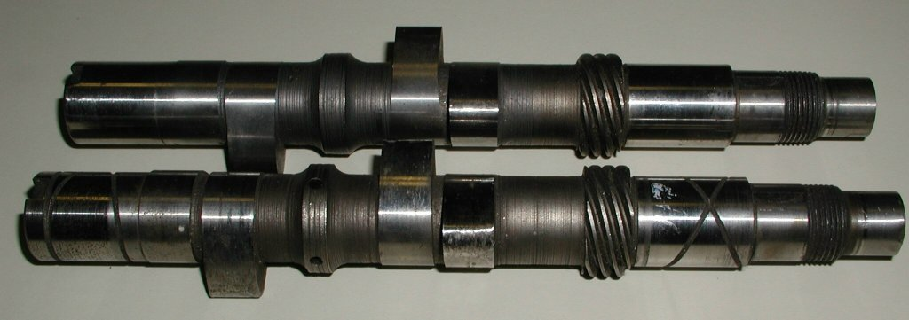

Cam Bushing Information
Any price mentioned in this article is current as of
02/12/21.
Summary:
This article shows the six Andover Cam Shaft Bushings available and provides a brief comparison of the bushings.
We will also discuss the thrust washers that are used with the various bushings.
Bushing Comparisons:
- 06-7538 -- NORTON, Bush, Camshaft, Pre 72 R.H. (
$23.01
each).
This bushing is only used on Atlas and Commando motors with the tachometer drive
on the timing cover.
- 06-7539 -- NORTON, Bush, Camshaft, Pre 72, L.H. (
$26.25
each).
This bushing is only used on Atlas and Commando motors with the tachometer drive
on the timing cover.
- 06-2600 -- NORTON, Bush, Cam, 1972/73 750, L.H. & R.H. (
$48.06
each).
This is the only bushing that has oil channels in the bushing and is to be used
with the cam shafts that do not have any oil scrolling on the bearing journals (see Cam Shaft Comparison).
- 06-3020 -- NORTON, Bush, Cam, 1973/74 850 R.H. (
$13.38
each).
This bushing can be used with any scrolled cam in any crank case with the tachometer drive
mounted in the timing side crank case.
- 06-5425 -- NORTON, Bush, Cam, 850 & MK3, L.H. (
$10.95
each).
This bushing can be used with any scrolled cam in any crank case with the tachometer drive
mounted in the timing side crank case.
- 06-5428 -- NORTON, Bush, Cam, MK3, R.H. (
$14.25
each).
This bushing is used on the MK3 and requires two bushings inserted in each side of the
timing side crank case. These bushings can be used with any scrolled cam in any crank case with the tachometer drive
mounted in the timing side crank case.
NOTE: In some pre-MK3 cases or some cams, these two bushings are too thick and do not provide any cam end play and should not be used.
These bushings could be used instead of the 06-2600 bushing on the timing side (R.H. side)
if you are not in favor of using the 06-2601 thrust washer.
To use these in place of 06-2600, you should put at least one oil slot in each bushing.
Thrust Washer Comparisons:
- 06-1086 -- NORTON, Washer, Thrust, Camshaft, 1971 On (
$5.95
each).
This thrust washer can be used with any scrolled cam in any crank case
with the tachometer drive in the timing side crank case. If you substitute two 06-5428 bushings for the one 06-2600 bushing as described above,
use this thrust washer.
- 06-2601 -- NORTON, Washer, Thrust, Camshaft, Some 1972(
$3.55
each).
This tabbed thrust washer is only used when fitting the 06-2600 bushing and there is
a locating hole for the tab in the crank case.
CamsShaft Comparisons:
